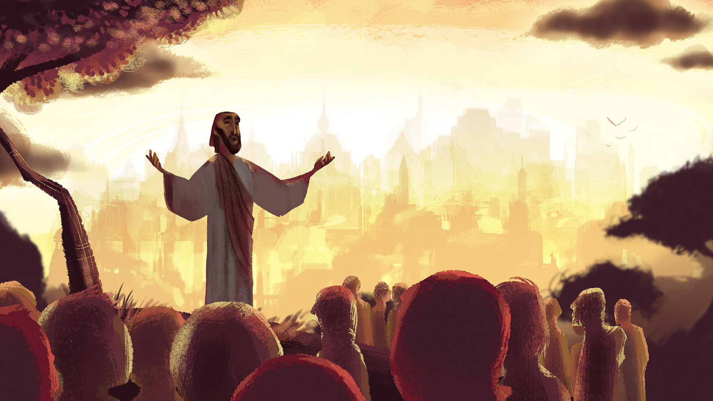

Youth Party
If you are reading this, stand on one leg..

If you did not read the last slide do
15 Jumping Jacks
Rest
Have you ever been this?


This isn't how God created life to be..
⏪
(let's rewind)
In the beginning..
| Day 1: Light | Day 4: Sun, moon and stars |
| Day 2: Skies and seas | Day 5: Birds and sea creatures |
| Day 3: Dry land and plants | Day 6: Land animals and humans |
Day 7: God rested
Genesis 2:2-3
2 On the seventh day God had finished His work of creation, so He rested from all His work.
3 And God blessed the seventh day and declared it holy, because it was the day when He rested from all his work of creation.
God rested and lived with His people
God didn't rest because He needed to..
He rested because He knew it's an important part of life and an example we should live by
It's so important that..
10 Commandments
- During the week, they work and follow the laws
- Then rest from all work on the 7th day
- Enjoy and acknowledge God's goodness
This practice was a temporary ritual
that points to a future permanent rest
Today, we can also practice rest with the same hope of future permanent rest
But what is this future permanent rest..?
Jesus!
A Role Model for Rest
- Even though time was important and there was so much pressure, Jesus still rested
- Rested under difficult circumstances
- Put rest as a priority
Mark 1:25
“Very early in the morning, while it was still dark, Jesus got up, left the house and went off to a solitary place, where he prayed.”
Provider of Permanent Rest
- In His sacrifice, He freed us from our sins and gives us rest from working our own way to meet God's standards
- When we rest in Jesus, He restores us in a way we never could on our own
Crazy thing is..
Jesus offers rest freely to you! Yes you!
There is no shame in rest
Practice Round

Sabbath in 2023
- Know why it's important
- Rest in Jesus in any kind of circumstance
- Rest physically and spiritually
- Rest in a way that compliments your life
- Rest big or small (just rest!)
Matthew 11:28
Come to Me, all who are weary and burdened,
and I will give you rest.

AMEN
Announcments
- Worship Team - Talk to Hannah or Lisa
- Join us Sundays - Youth Room @ 2pm
- Easter Sunday - April 9th
- Follow our Instagram! @gvc.youth